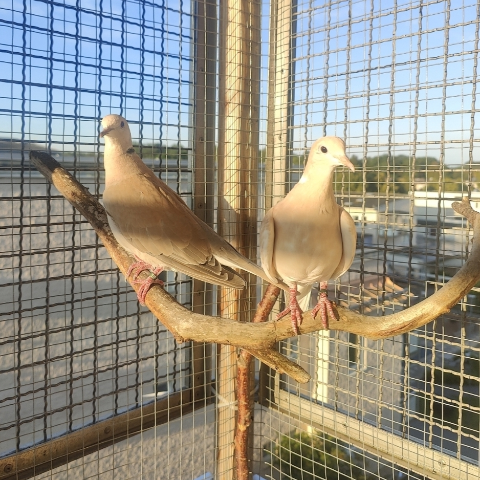
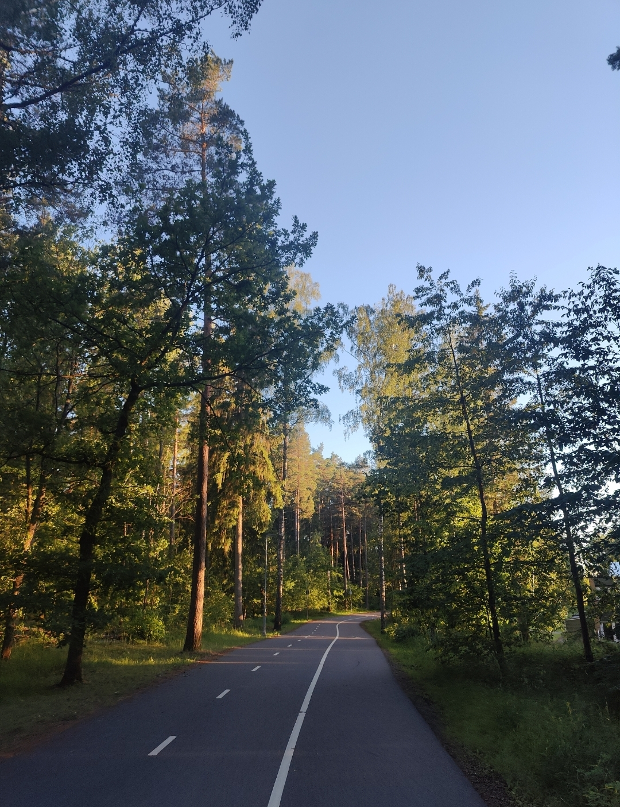
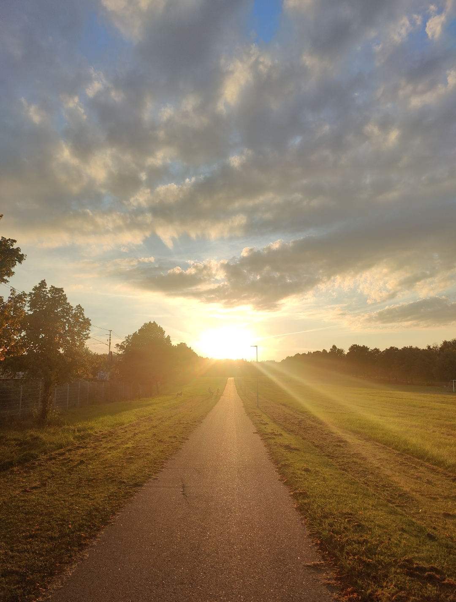
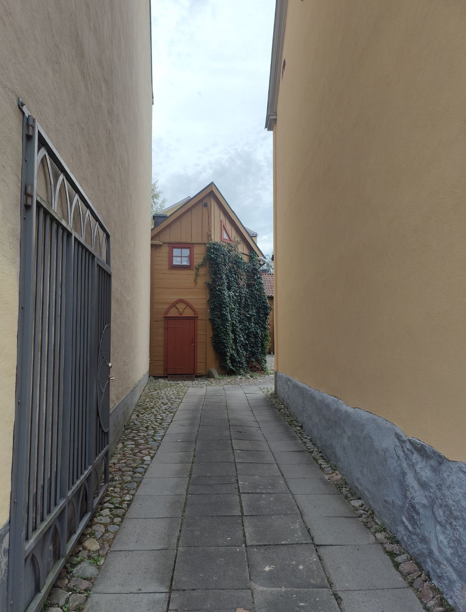

What are you doing?
This is a now page. If you have your own site, you should make one, too!
My life is often busy, and I've been somewhat secretive when sharing details with family and friends. I thought this would be a great way to keep everyone updated on what I'm currently doing. I'll do my best to keep this page updated with any new happenings. Thank you, Phillip Ridlen, for inspiring me with your now page!
This was what I was doing as of September 27 2024
This was what I was doing as of August 27 2024
This is what I am doing now
Life 🌟

I still live in the same apartment, just a few minutes from the university, along with my two ringneck doves and my roommate.
As graduation slowly approaches, I'm beginning to reflect on my next steps. While I don't see myself staying in Linköping long-term, there are a few options to consider. I could remain in Linköping for a year or so to figure things out, or I might head to Norway to focus on my career. Another possibility is moving to Germany to live with a friend, though that depends on some personal details I won't share on here. In the meantime, I'll be traveling in November, which might help provide some clarity. I'll be visiting Budapest with friends and a week or so after that I'm attending a wedding in India!
Education 🎓
My master's thesis is progressing well. I've conducted initial interviews with the team at Opera to better understand the current state and usability of gRPC, both within the team and more broadly. The report is taking shape, and everything feels much clearer compared to the early stages. Now that I've identified the core issue, I'm focused on implementing a solution that I've named gAPI, a gRPC API QA tool.
In addition to my thesis, I'm taking a course where I'm contributing to Microsoft's Playwright repository, which has been a lot of fun. As a passionate open-source advocate, and with Hacktoberfest around the corner, I encourage everyone to get involved!
Work 💼
Currently, I'm not officially employed, aside from my thesis work at Opera.
Organizations 🏢
Two days ago, the computer organization Lysator reached out to me regarding my ethical hacking organization. They proposed a merge of organizations, where LiTHe Hax would become a project under Lysator. This would open many doors for us, providing valuable contacts and resources. While I'm flattered by the offer, we've invested a lot of time and effort into founding LiTHe Hax, so I've decided to continue running it independently for the rest of this year. But we've agreed to collaborate, and by early 2025, we'll aim to merge the two organizations. We're scheduled to have a meeting next week to discuss the details of this collaboration.
Fun fact: both organizations share the same founding date, though they're about 50 years apart! Speaking of LiTHe Hax, our annual meeting is next week, where we'll be electing four new members to join the board — our organization is growing!
As Editor-in-Chief of LiTHanian, I've at last managed to put together a talented editorial team. We've already planned our first edition, which will have a Christmas theme, and most of the articles are already written. This issue will reach over 7000 readers, and I'm incredibly excited about it!
Expert Progress 📈
The concept of reaching 10,000 hours to become a professional or an expert in a field is derived from Malcolm Gladwell's book "Outliers: The Story of Success" Gladwell popularized the idea that achieving a high level of proficiency in any field typically requires about 10,000 hours of dedicated practice. This notion is based on the research of psychologist Anders Ericsson, who studied the practice habits of elite performers in various domains.
I've been tracking my programming time since 2019, so these numbers are based on that data. The actual total is likely higher, considering I wrote my first program in 2012! Please note that I include this jokingly; I don't necessarily believe in the idea of becoming an expert after 10,000 hours. I haven't given it much thought, and I certainly don't feel like an expert yet.
Hobby Projects ⚙️
For me, having hobbies outside of studying and working is very important. My main hobbies are programming, photography, music, and writing.
In programming, I'm currently working on developing a Digital Bullet Point Journal. My goal is to keep it flexible so users can customize it according to their preferences. In short, it's a website that allows you to track your personal well-being without storing things in a database — everything is stored locally in JSON format.



Like last month, I haven't taken many pictures, but I've been going on plenty of walks and managed to capture a few beautiful moments along the way.
I don't think I've produced any music this past month, but I've definitely been listening to a lot. I'll use this space to recommend a few songs I've been hooked on lately. First is "Skin Deep" by Hohnen Ford, which I actually discovered on TikTok, haha! :-P Next is "Untouchable Face" by Ani DiFranco — it's so raw and pure, I absolutely love it. Lastly, even though it's a sad song, "S P E Y S I D E" by Bon Iver made me really happy. I've been waiting for new music from them, and this one hit hard — it's amazing! Be sure to check out the music video, too.
In terms of writing, I've been actively working on a larger project because I recently reached an exciting milestone — I wrote my 100th poem in Swedish. To celebrate, I compiled all of them into a poetry collection. While it still needs a few rounds of revisions before it's ready for publication, the project is well underway. Below, I've shared one of the featured poems, translated into English. I originally wrote this one for a dear friend of mine.
perfection is like a freshly washed window
but not the window itself
it's the light falling through
it's a cup of coffee that never cools
a pen that writes without hesitation
as if it knows exactly what it wants to say
and always knew it
perfection is not a straight line
it is the bend where the road bends
where the world for a moment feels unexpectedly soft
perfection is to be there
right there
with everything that cannot be put into words
with her
perfection is when she ties her shoes
not to go anywhere in particular
not to show off to the world
the world just happens to be there
ready to be dyed in her beauty
perfection is not something she strives for
she carries it with her
in every movement
when she smiles, everything stops
not because she demands attention
because for a moment she makes everything more than it is
she is what happens when perfection becomes reality
without ever having to try to be